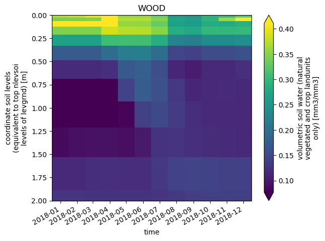

Customize your case: Controling model features#
Customizing your case with namelist changes#
This is an optional tutorial that provides some additional guidance for creating an experimental clone for a NEON case and making namelist changes. If results from this preliminary experiment look promising, you should also consider spinning up the model. These examples are in the customizeCase_spinupExample notebook
We’re going to move kind of quickly through some material that’s already covered in the tutorial on cloning a NEON case. The cloned case that you created in the Clone_Case tutorial will be used as the control simulation for this model experiment. If you have tried cloning a case you need to do that now.
In this tutorial#
Create an experimental clone for a NEON site that you’ve already run.
Make a namelist change in user_nl_clm.
Submit the case.
First let’s start with a bit of background.#
CLM has different features that can be turned on or off with namelist changes. Some of these features represent alternative hypotheses about how different aspects of how the land works. The different options have alternative model structure and parameterizations for particular processes that are controlled with namelist flags. These include:
FATES vs. ‘BigLeaf’ vegetation
Medlyn vs. Ball-Berry stomatal conductance
CENTURY vs. MIMICS soil biogeochemistry
Different soil moisture stress formulations (below)
and lots more
You can find out more about namelists in the CTSM user’s guide
Why would you want to use this?
We noticed that soil moisture profiles in CLM have an odd feature where soil moisture is higher in surface soils than in the sub surface. Why would this happen? 
Plant hydraulic stress (or PHS) was introduced in CLM5. You can learn more about PHS in this paper, where Daniel Kennedy and co-authors mentioned hydraulic redistribution of soil water by plant roots. This happens in the real world too and is a pretty neat feature of PHS. Could hydraulic redistribution also be keeping surface soils in CLM too wet? To address this question we’ll do a simple model experiment where we turn off PHS. This will revert back to the BTRAN formulation of soil moisture stress that was used in previous versions of CLM.
We can turn of PHS with a simple namelist modification, but since this will change answers in the model, we also need to spin up the model again to generate new initial conditions with PHS off.
NOTICE: If you’re running this notebook through the NCAR JupyterHub login, you need to be on a Cheyenne login node (NOT Casper).
Set up environment#
It is important in order to have all the tools and packages you need to run simulations.
The code below is not needed in the cloud.
TIP: If you’re running on Cheyenne, you may need to uncomment the the following two lines of code. This will set up your conda environment correctly.
This is not required if your running CESM-Lab in the cloud.
#module purge
#module load conda ncarenv
1. Create a new case.#
Because we’re going to modify namelist options that will change answers in CLM we have to run this case through an accelerated decompostion (AD) and postAD spinup. This will generate new initial conditions for our experimental case, but it also takes a long time. First we’ll just do a simple sensitivity test to see if model results are sensitive to the representaton of plant water stress.
1.1 Check that you’ve run a control case.#
export neon_site='WOOD' # the site you want to run
ls ~/scratch/NEON_cases/$neon_site.transient
If the code block above says “No such file or directory” you need to go back and create a control case for your neon_site using clone_case.
If you have run a control case, which includes flies like:
case.build, case.setup, and case.submit;
env_build.xml, env_batch.xml, and env_run.xml; and
user_nl_clm, user_nl_datm, and user_nl_datm_streams
Then you can move on to the next step
1.3 Create an experimental clone#
In our experimental case we’ll be using the BTRAN formulation of soil moisture stress.
HINT: It’s helpful to have descriptive experiment names.
export experiment='BTRAN' # the experimental name of your case
Since we’re creating an experimental case that will change answers in the model we should run a full AD and postAD spinup, but for now we just want to run a quick sensitivity experiment with a new parameter file.
Then run_neon with the following flags:
--experiment $experiment--setup-only
To make things faster, we’ll also use the experimental control case as our ‘base_case’.
./run_neon.py --neon-sites $neon_site \
--output-root ~/scratch/NEON_cases \
--base-case ~/scratch/NEON_cases/$neon_site.transient \
--experiment $experiment \
--overwrite \
--setup-only
echo '----Your experimental clone has been created----'
2 Customizing your case: Namelist changes#
The configuration of CLM can be customized via namelist modifications.
These changes made using namelist files like user_nl_clm
2.1 Move to the case directory for your experimental clone#
cd ~/scratch/NEON_cases/$neon_site.$experiment.transient
2.2 Getting familiar with namelist files#
user_nl_<model> files are created in the case directory after setting up your case with ./case.setup
Note: This was already done for us since we cloned a case with run_neon
Take a look!#
What other user
user_nl_<model>files do you already have in this case directory?What kind of information is already included in a
user_nl_clmfile?
We can explore these files on the comand line using an editor, by opening them directly in jupyter hub, or by simply printing the contents of the files to the screen here.
ls user_nl_*
cat user_nl_clm | tail -18
The compset that you created your case with sets up initial, or default namelist options. These can be found in CaseDocs/lnd_in
2.3 Looking deeper at namelist options#
All CLM namelist options are defined in the lnd_in file
We can explore this file on the comand line using an editor, by opening it directly in jupyter hub, or by simply printing the contents of the files to the screen here.
NOTE: This file is huge, so we’ll just look at the first 65 lines
cat CaseDocs/lnd_in | head -60
There’s a lot to dig into here! So we’ll just stick with a few highlights.
Take a look#
See what printed to in the cell above and answer the following questions
finidat: What initial conditions file are you using?fsurdat: What surface dataset are you using?paramfile: What parameter file are you using?spinup_state: What is your spinup state?use_hydrstress: Are you using plant hydraulic stress?
Does this make sense? Answers are in the hidden cell below.
finidat = '.../initdata/WOOD.2022-11-11.clm2.r.0318-01-01-00000.nc 'This is your initial condition filefsurdat = ".../surfdata_1x1_NEON_WOOD_hist_78pfts_CMIP6_simyr2000_c230111.nc"This the surface dataset that’s been modified for our NEON site.paramfile = '.../ctsm51_params.c211112.nc'is the default parameter file for CTSM5.1spinup_state = 0, which is used for normal modeuse_hydrstress = .true., because plant hydraulic stress is on by default in CTSM5.1
Additional information about customizing CTSM’s configurations, including namelist modifications, are available in the CTSM users guide Namelist changes can also be used to modify variables on history file output. Simple modification of history file output DOES NOT require spinning up the model.
A list of all the CTSM history fields are available here
A list of all the CTSM-FATES history fields are available here
2.3 Turn off plant hydraulic stress#
For this experiment we’re going turn plant hydraulic stress off. We can change user_nl_clm using an editor, by opening it directly in jupyter hub, or with the following comand.
echo "use_hydrstress = .false." >> user_nl_clm
Let make sure this worked. We can:
preview namelists;
check the
lnd_infile.
## now make sure it worked
./preview_namelists
cat CaseDocs/lnd_in | grep hydrstress
We’ve turned off PHS in simulation
2.4 Start the simulation#
Since we made a clone and only made namelist changes we don’t have to rebuild our case, so now we’re ready to submit the case.
./case.submit
qstat -u $USER
tail ~/scratch/NEON_cases/$neon_site.$experiment.transient/CaseStatus
You’ve created and run a full spinup for an experimental case of CLM at the NEON tower you selected!
Now we need to see how the simulations are different.
If you’re developing this tutorial:
Before saving and pushing this code to github go to Kernel and Restart kernel and clear all outputs...